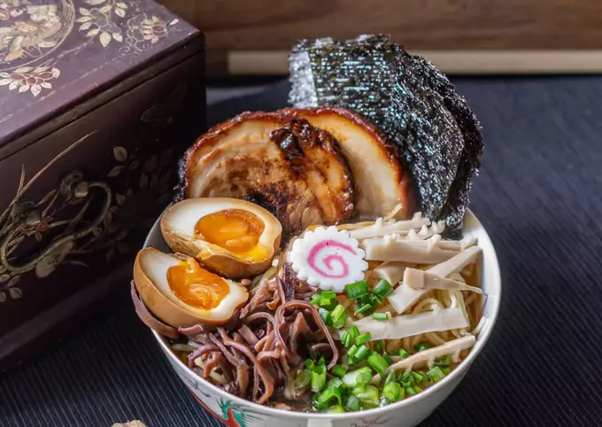

Shoyu Ramen

Description
Shoyu Ramen is one of the most popular Japanese ramen flavors next to shio (salt) ramen and miso ramen. Shoyu Ramen features a light and savory soy-sauce based broth, and classic Japanese ramen toppings such as chashu, menma (seasoned bamboo shoots) and half-boiled ajitama (seasoned egg). The naruto (Japanese fish cake with a pink whirlpool pattern) in the middle adds a signature look to the bowl.
Ingredients
- 1/2 cup Shoyu Tare
- 5 cups Basic Clear Chicken Soup
- 1 1/3 lbs fresh ramen noodles
- 4 - 8 slices Chicken Chashu
- 4 sheets nori seaweed
- 4 slices naruto (Japanese fish cake)
- 4 Half-Boiled Ajitama
- 12 - 16 pieces Menma
- Negi scallions
Steps
- With all your ingredients ready to go, bring a large pot of water to boil over medium-high heat.
- Heat your ramen bowls by filling them halfway with hot water. The bowls don't need to be scalding, but they should be hot to the touch. Dump out the hot water and dry the bowls with some paper towels or a clean towel.
- Put the tare and soup in a medium saucepan. Mix and bring to a simmer over low heat.
- Cook the noodles in the large pot of boiling water. Ramen that has been cut to a standard thickness (about 1 mm) will cook in 1 to 2 minutes.
- About 30 seconds before the noodles are finished cooking, ladle the soup into the ramen bowls.
- Drain the noodles, taking care to shake off as much excess water as you can. Carefully place some noodles in each bowl of soup, keeping them tidy.
- Place 1 - 2 slices of chashu, 1 piece of nori, 1 slice of naruto, 1 egg, 3 or 4 pieces of menma, and a sprinkle of negi neatly on the ramen. (The sheet of nori should be placed so just the tip is in the soup, with the rest perching on the side of the bowl. The naruto fish cake should go right in the middle).
- Serve immediately.